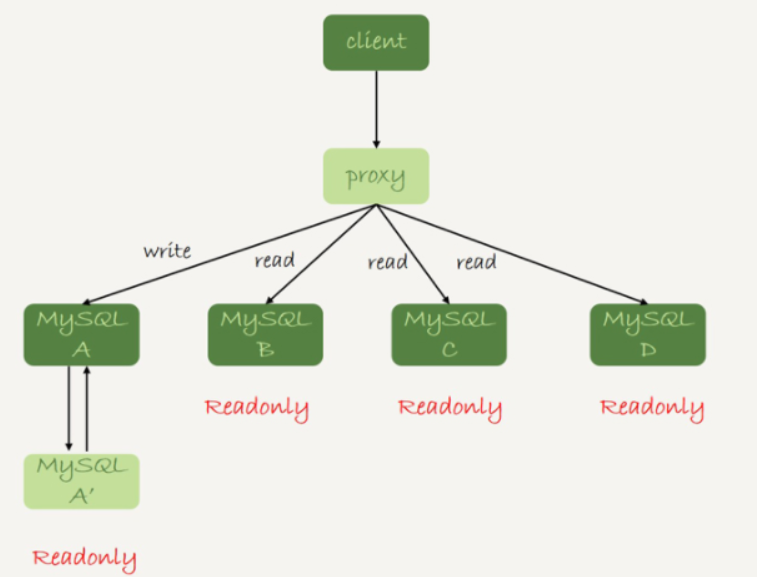

MySQL如何解决一主多从的过期读问题
两种架构
基于一主多从的读写分离，如何处理主备延迟导致的读写分离问题。
读写分离的主要目标：分摊主库压力。
有两种架构：
1、客户端主动做负载均衡，把数据库的连接信息放在客户端的连接层。由客户端选择后端数据库进行查询。
2、MySQL和客户端之间加上一个中间代理层proxy，客户端只连接proxy，由proxy根据请求类型和上下文决定请求的分发路由。

两种架构特点
1、客户端直连方案，少了一层proxy转发，查询性能较好，结构也比较简单。
由于要了解后端部署细节，所以在出现主备切换、库迁移等操作时，客户端都会感知到，并且调整数据库连接信息。客户端再分配一个负责管理后端的组件，让业务端只注重于业务逻辑开发
2、带proxy的架构，使客户端不需要关注后端细节。
连接维护、后端信息维护等工作，都是由proxy完成的。但是架构整体相对复杂
两种架构都会遇到”过期读”问题：
由于主从可能存在延迟，客户端执行完一个更新事务后马上发起查询，如果查询选择的是从库的话，就有可能读到的是事务更新之前的状态。
客户端希望的是查询从库的数据结果和查主库的数据结果是一样的。
下面是解决方案：
1 | 强制走主库方案； |
实际应用中，这几个方案可以混合使用。
比如，现在客户端对请求做分类，区分哪些请求可以接受过期读，哪些请求完全不能接受过期读。然后，对于不能接受过期读的语句，再使用等GTID或等位点的方案，
过期读本质上是由一写多读导致的，为了避免过期读，只有两种选择：
1、超时放弃
2、转到主库查询
强制走主库方案
将查询请求做分类：
1、对于必须要拿到最新结果的请求，强制将其发到主库上。
2、对于可以读到旧数据的请求，才将其发到从库上。
这种方案虽然取巧，但是好用。
此方案最大的问题在于：当遇到实时性比较高要求的业务需求，就要放弃读写分离，所有的读写压力都在主库，等同于放弃了扩展性。
Sleep方案
主库更新后，读从库之前先sleep。如执行一条select sleep(1)命令。
方案假设：大多数情况下主备延迟在1s之内，做一个sleep可以有很大概率拿到到最新的数据
该方案不精确：
1、如果这个查询请求0.1s就能在从库拿到正确结果，sleep(1)也会等1s
2、如果延迟超过1s，还是会出现过期读
判断主备无延迟方案
要确保备库无延迟有三种做法：
在show slave status结果里的seconds_behind_master参数可以用来衡量主备延迟时间的长短。
第一种方法
每次从库执行查询请求前，先判断seconds_behind_master是否等于0，如果不等于0就要等到这个参数变为0才执行查询操作。
第二种方法
比对位点确保主备无延迟。
Master_Log_File 和 Read_Master_Log_Pos,表示的是读到的主库的最新位点；
Relay_Master_Log_File 和 Exec_Master_Log_Pos,表示的是备库执行的最新位点；
如果Master_Log_File 和 Relay_Master_Log_File 值相同，且Read_Master_Log_Pos和Exec_Master_Log_Pos相同，说明接受到的日志已经同步完成。
第三种方法
对比GTID集合确保主备无延迟
如果两个集合相同，表示备库接收到了日志都已同步完成。
一个事务的binlog在主备库之间的状态：
1、主库执行完成，写入binlog，并反馈给客户端；
2、binlog被从主库发送给备库，备库收到
3、在备库执行binlog完成。
我们上面判断主备无延迟的逻辑是”备库收到的日志都执行完成了”，但是有一部分日志会处于客户端已经收到提交确认，而备库还没收到日志的状态。
在这里插入图片描述
在主库上执行完成了三个事务trx1、trx2、trx3，前两个已经传到从库并且执行完成了。trx3在主库执行完成，并且已经回复给客户端，但是还没有传到从库中。此时在从库B上执行查询请求，按照上面的三个方法的逻辑，从库会认为已经没有同步延迟，但是还是会查不到trx3.
配合semi-sync
解决上面的问题，要引入半同步复制，即semi-sync replication
semi-sync是这样做的：
1、事务提交的时候，主库把binlog发给从库；
2、从库收到binlog以后，发回给主库一个ack，表示收到了
3、主库收到这个ack以后，才能给客户端返回”事务完成”的确认
也就是说，如果启用了semi-sync，就说明所有给客户端发送过确认的事务备库都已经收到了日志。
semi-sync+位点的判断方案，在一主一备场景是成立的，在一主多从场景中，主库只要等到一个从库的ack，就开始给客户端返回确认。
但是这样会出现问题：
1、查询落到没有收到最新日志的从库上，产生过期读。
2、业务更新高峰期，主库的位点或者GTID集合更新很快，两个位点的等值判断一直不成立，很可能出现从库上迟迟无法响应查询请求的情况
等主库位点方案
这个命令逻辑如下：
1、在从库执行
2、参数file和pos指的是主库的文件名和位置
3、timeout可选，设置为正整数N表示这个函数最多等待N秒
4、返回正整数M，表示从命令开始执行，到应用完file和pos表示的binlog位置执行了多少事务
返回值还有一下异常结果：
1、NULL，执行期间，备库同步线程发生异常。
2、-1，等待时间超过N秒
3、0，这个位置已经执行过了
使用该方法步骤：
1、事务trx1更新完后，马上执行show master status得到当前主库执行到的File和Position
2、选定一个从库执行查询语句
3、在从库上执行select master_pos_wait(File,Position,1)
4、如果返回值是>=0的正整数，则在这个从库执行查询语句
5、否则到主库执行查询语句。
假设，每条select最多在从库上等待1s，如果1s内master_pos_wait返回一个>=0的整数，就确保了从库上执行的这个查询结果一定包含trx1数据。
如果每个从库都延迟超过了1s，查询压力都会跑到主库上去。
但是为了不允许过期读，只有两种方法：1、超时放弃 2、转到主库查询